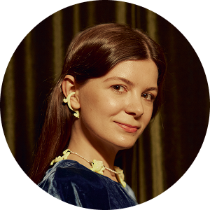

Светлана
Шмакова
От задачи продвижения книги — к стратегии развития проектов Светланы
Вагэ Хачатрян
стратег и продюсер · вторая встреча
01
Увидеть реальную задачу
Что на самом деле стоит за запросом на продвижение книги
Мы начали с вопроса: как продвигать книгу?
Но книга — не финальная точка.
За книгой должна появиться продуктовая система.
Какие именно продукты должны в неё войти — пока открытый вопрос.
Но и сама книга нужна не только ради продажи книги.
На первой встрече вы сами сформулировали ответ
Один проект. Несколько результатов.
У каждого решения есть задача уровнем выше.
Миссия и видение династии
Личная и бизнес-стратегия Светланы
Не этапы,
а четыре масштаба одной системы.
Книга — лишь один из способов решать задачи более высокого уровня.
А какие ещё действия могут работать на те же задачи?
Одну и ту же задачу можно решать разными способами.
И одно действие может работать сразу на несколько задач.
Поэтому задача — не найти лучший способ продвинуть книгу.
А найти комбинацию решений, которая работает сразу на нескольких уровнях.
Решения должны усиливать друг друга и создавать накопительный эффект.
01
Решать несколько задач одновременно
03
Открывать следующие возможности
04
Усиливать последующие действия
И не разрушать целостность — от видения до конкретного действия.
Видение и миссия династии
Личная и бизнес-стратегия Светланы
Но возможных комбинаций — много.
Какую комбинацию выбрать?
И каким маршрутом идти от замысла к результату?
Но выбрать комбинацию невозможно, не понимая целей, активов и дефицитов.
Порядок, в котором это выбирается
Цели
Активы
Дефициты
Комбинации
Выбор
Вот эту систему выбора я и называю стратегией.
02
Мой подход к формированию стратегии
Как я нахожу маршрут от замысла к результату
Сначала — сам подход. Затем — на примере вашего проекта.
01
Видение
Образ будущего, ради которого всё
Для меня отправная точка — видение.
Видение — образ будущего, которое мы хотим создать.
02
Замыслы
Конкретные результаты с критериями
Следующий уровень — замыслы.
Замысел — уже конкретный результат, для которого можно определить критерии реализации.
03
Позиция и активы
На что можно опереться сейчас
Дальше мне важно понять исходную позицию.
Исследуем стартовую позицию
Время, энергия и образ жизни
На какие активы мы уже можем опереться?
Приоритизация активов
Активов десятки, а глубокое исследование каждого занимает недели. Поэтому сначала быстро отбираем самые ценные.
1
Собираем все найденные активы
2
Оцениваем их по двум критериям
3
Отбираем те, что высоки по обоим
4
Глубоко исследуем только выбранные
Критерий 1
Трудноповторимость
Насколько сложно создать такой же актив. Чем труднее повторить, тем он ценнее.
Критерий 2
Устойчивость
Как долго актив сохраняет ценность независимо от изменений рынка и обстоятельств.
Отбираем по двум осям
В глубокое исследование берём только трудноповторимые и устойчивые активы.
Каких активов нам не хватает для реализации замысла?
04
Дефициты
Чего не хватает и как это закрыть
Недостающий актив не обязательно создавать самим.
Три способа закрыть дефицит
Если речь о доступе — что ценного есть с нашей стороны?
Где возникает взаимная ценность?
Наши активы
Нужные нам активы
06
Маршруты
Как выстроить последовательность ходов
Из этого появляются разные возможные маршруты.
В этих маршрутах мы ищем действия с асимметричным эффектом.
Асимметричное — значит вложения и результат несопоставимы.
Покажу на примере вашего проекта, какие гипотезы асимметричных действий я вижу.
03
Разбор на задаче Светланы
Пробуем этот способ мышления на вашей задаче
У нас уже есть часть конструкции.
Экспертиза
Книга
Гипотезы продуктов
Команда
Ресурсы
Мы примерно понимаем, для кого могут быть эти продукты.
Но это не просто предприниматели.
Состоявшиеся предприниматели
Со сформированным капиталом
На этапе, когда возникают вопросы преемственности
С близкой философией семьи, наследия и долгого горизонта
Как добраться именно до этих людей?
Линейный путь — собирать эту аудиторию самим.
Контент
Реклама
PR
Мероприятия
Лиды
Аудитория
Но такую аудиторию сложно просто купить рекламой.
Капитал
×
Жизненный этап
×
Философия
Дефицитный актив
Доступ к целевой аудитории
Значит, один из дефицитных активов — доступ к нужной аудитории.
Но этот актив необязательно создавать самим.
А что, если нужная аудитория уже у кого-то собрана?
У кого уже есть доступ к этим людям?

Виктория Салтыкова
Основатель «Проекта Жизнь» — центра семейного и корпоративного наследия
Чем занимается «Проект Жизнь»
6–7 месяцев
Генеалогическое исследование
Узнайте, кем были ваши предки, откуда они и чем занимались
Документальные спецпроекты
Корпоративное наследие
Раздел в разработке
Но почему она должна дать нам доступ к своему активу?
Что ценного есть у Светланы с другой стороны?
И где возникает взаимная ценность?
Актив Светланы
Конкретный совместный ход
Актив Салтыковой
Тогда это не просьба о доступе, а обмен активами.
Но ценность такого хода — не только в продвижении книги.
Один доступ открывает сразу несколько направлений.
Доступ к целевой аудитории
И это не единственный носитель такой аудитории
Школа бизнеса «Горки» — программы для собственников
Программа «Самолёт» Михаила Федоренко
Философия масштабного мышления для тех, кто готов к внутренним изменениям и новым интеллектуальным вызовам
2,5 месяца
интенсивной работы
21 участник
с бизнесом от 500+ млн ₽
15 лет
опыта работы с лидерами
«Глобальные задачи часто выполняют люди, чьё мышление не соответствовало уровню их позиции»
Михаил Федоренко
Мы учились на этой программе вместе
«Самолёт»
Виктория Салтыкова
«Проект Жизнь»
Евгения Ронжина
сооснователь школы бизнеса «Горки»
Вагэ Хачатрян
продюсер, стратег
Там мы и познакомились.
Мы начинали с вопроса: «Как продвигать книгу?»
А пришли к ходу, который меняет сразу несколько элементов конструкции.
Вот что я имею в виду под асимметричным ходом.
04
Почему для этой задачи нужен архитектор
Какой тип работы требуется для такой задачи
Почему для этой задачи недостаточно одного сильного инструмента?
Если нужно построить дом, плиточник прекрасно решает задачу плитки. Кровельщик — кровли. Электрик — электрики.
Проблема возникает, когда через один из этих инструментов пытаются спроектировать весь дом.
АРХИТЕКТУРА
PR · Продукт · Контент · Сообщества
Выступления · Партнёрства · Медиа
Сначала — архитектура. Затем — инструменты.
Каждый сильный специалист смотрит на задачу через свою профессиональную оптику
PR
медиарепутацияинфоповодыохваты
CONTENT
вниманиеконтентдистрибуция
PRODUCT
спроспродуктпредложение
BUSINESS STRATEGY
бизнес-модельэкономикапозиция
Но задача Светланы лежит между этими областями.
Поэтому сначала проектируется система — и только потом определяется, какие специалисты и инструменты понадобятся внутри неё.
Мой опыт сложился на пересечении тех же задач
Бизнес-моделирование
Капитал и экономика
Продукт и продюсирование
Маркетинг и смыслы
Социальный капитал
Стратегическая архитектура
Релевантность здесь не в превосходстве над узким специалистом, а в способности собрать целостную архитектуру.
Из чего именно сложилась эта оптика
Бизнес-моделирование
Ценность → бизнес-модель → система → масштабирование
Обучение — [НУЖНЫ ДАННЫЕ: программа и год]
Капитал и экономика
Упаковка бизнеса · привлечение инвестиций · финансовая модель · unit-экономика
Обучение — [НУЖНЫ ДАННЫЕ: программа и год]
Продукт и продюсирование
Экспертиза → аудитория → спрос → продукт → предложение
Проекты — [НУЖНЫ ДАННЫЕ: какие можно называть]
Маркетинг и смыслы
Смыслы × аудитория × каналы × измеримый результат
Кейсы — [НУЖНЫ ДАННЫЕ]
Социальный капитал
Активы → доверие → отношения → доступ → новые возможности
Обучение и практика — [НУЖНЫ ДАННЫЕ]
Речь не о квалификации финансиста или PR-специалиста, а о понимании экономики решений и языка каждой из этих систем.
И сама тема Светланы для меня не является новой
В рамках «Практикума масштаба» Михаила Федоренко я отдельно работал с темой дореволюционного предпринимательства и предпринимательских династий.
В том числе готовил разбор конкретного предпринимателя — [НУЖНЫ ДАННЫЕ: имя, только после проверки].
ПреемственностьРепутацияКапиталОтношенияДлинный горизонт
Мне близка не только задача продвижения книги, но и оптика, внутри которой находится сама книга.
Артефакт по теме: разбор, материалы практикума, исторический документ
Важна не каждая компетенция по отдельности. Важно их пересечение.
БИЗНЕС-МОДЕЛЬ
× ПРОДУКТ
× ЭКОНОМИКА
× СМЫСЛЫ
× СОЦИАЛЬНЫЙ КАПИТАЛ
→
Стратегия Светланы
Здесь нужна не максимальная глубина в одном инструменте, а способность собрать несколько дисциплин в одну работающую архитектуру.
А для конкретных инструментов — подключать специалистов, которые глубже в своей области.
Моя роль — спроектировать архитектуру и собрать под неё нужные ресурсы
01
Спроектировать
Целиактивыограниченияпродуктыпозициямаршрут
02
Выбрать
Какие инструменты действительно нужны
03
Подключить
Специалистыпартнёрыплощадкиконтактыресурсы
Не делать всё самому. Сделать так, чтобы всё работало как одна система.
Эту способность лучше проверять не по словам, а по тому, что уже было сделано
Увидеть более крупную систему за первоначальным запросом
Было
[НУЖНЫ ДАННЫЕ: исходная ситуация]
Увидели
[НУЖНЫ ДАННЫЕ: более крупная задача]
Спроектировали
[НУЖНЫ ДАННЫЕ: решение]
Получили
[НУЖНЫ ДАННЫЕ: измеримый результат]
Релевантность Светлане: исходный запрос не отменяется — он становится частью более сильной системы.
Реальное фото выступления или сцены
Превратить сильную экспертизу в позицию, которую понимает внешняя среда
Экспертиза
Смысл
Упаковка
Сцена
Позиция
Доказательство
TEDx и спикерские проекты — [НУЖНЫ ДАННЫЕ: кто, задача, роль]
Смыслы должны заканчиваться решением другой стороны
Сложная идея
Ясная ценность
Убедительная конструкция
ДЕЙСТВИЕ
Доказательство
Инвестиционные питчи и упаковка бизнеса — [НУЖНЫ ДАННЫЕ: количество проектов]
Результат
[НУЖНЫ ДАННЫЕ: привлечённые инвестиции]
И отдельно — какие ресурсы я могу подключать
Команда
[НУЖНЫ ДАННЫЕ: кто в команде и за что отвечает]
Узкие специалисты
PR · маркетинг · контент · дизайн — [НУЖНЫ ДАННЫЕ: только реально доступные]
Партнёры и площадки
[НУЖНЫ ДАННЫЕ: кого корректно называть]
Прямые контакты
В том числе прямой контакт с владельцем проекта с потенциально релевантной аудиторией — [НУЖНЫ ДАННЫЕ: формулировка]
Потенциальный ресурс — не обещанное партнёрство. Комплементарность проверяется в рамках стратегии.
Разделить работу на два этапа
01
Проектирование стратегии
Сначала — спроектировать. Потом — строить.
Нельзя осметить строительство, пока не спроектировано здание.
Сначала нужно понять, что именно мы строим.
И только тогда становится понятно, что потребуется.
Люди
·
Материалы
·
Бюджет
·
Сроки
Сначала проектируем стратегию.
И только потом — её реализацию.
Команда
·
Подрядчики
·
Бюджет
·
Сроки
·
Действия
06
Проектирование стратегии
Что именно мы проектируем
Продуктовая стратегия
Карта стейкхолдеров
Активы и дефициты
Трудноповторимые активы
Карта смыслов
Рычаги
Приоритеты
Маршрут
Карта стейкхолдеров
Клиенты
·
Партнёры
·
Носители нужных активов
·
Команда
·
Эксперты
·
Институции
Исследование активов
Экспертиза
·
Репутация
·
Связи
·
Доступы
·
Аудитории
·
Капитал
·
Команда
·
Продукты
·
Интеллектуальные активы
Какие активы нам ещё понадобятся?
Какие из наших активов трудно повторить?
Именно вокруг них можно строить преимущество.
Карта смыслов
Светлана
·
Книга
·
Продукты
·
Преемственность
·
Семья
·
Династия
·
Наследие
Где одно действие может дать непропорционально большой эффект?
Но делать всё одновременно невозможно.
Поэтому определяем приоритеты.
И собираем маршрут.
Текущая позиция
Ход 01
Ход 02
Ход 03
Замысел
Каждый ход должен усиливать следующий.
Ход
Результат
Новый актив
Следующий ход
07
Результат проектирования
На выходе — стратегия, по которой можно действовать.
Что будет на выходе
Продуктовая стратегия
Карта стейкхолдеров
Карта активов и дефицитов
Трудноповторимые активы
Карта смыслов
Ключевые рычаги
Приоритетные стратегические ходы
Маршрут реализации
И главное — станет понятно, что делать первым.
После проектирования становится понятен объём реализации.
Становится понятно, что потребуется.
Команда
·
Подрядчики
·
Бюджет
·
Инструменты
·
Сроки
И можно собрать реальную смету.
Проверяем их в реальности.
Гипотеза
Действие
Результат
Работающее — усиливаем. Неработающее — меняем.
Каждый результат меняет нашу позицию.
Новая позиция открывает новые ходы.
Ход
Новая позиция
Новые возможности
Стратегия развивается вместе с реализацией.
Проектирование стратегии
600 000 ₽
Реализация оценивается после проектирования стратегии.
Проект
Объём работ
Команда
Сроки
Смета